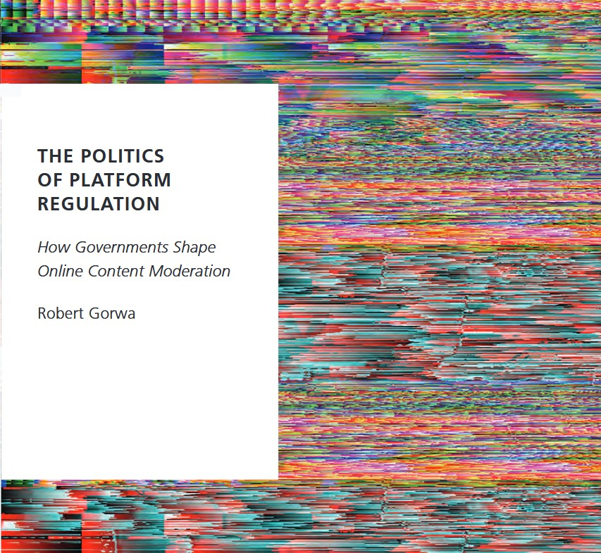

The Politics of Platform Regulation
Published in Spring/Summer 2024 by Oxford University Press.
Leading multinational technology companies like Alphabet, Meta, Twitter, TikTok, and Microsoft now operate sprawling, complex systems to govern online behavior. These technical and bureaucratic infrastructures, commonly termed "content moderation" or "trust and safety," were developed in an effort to keep illegal and harmful material--such as child abuse imagery, hate speech, and incitement to extremist violence--out of sight and out of mind. But recently, they have been mired with scandal, and increasingly are in the public crosshairs.
In The Politics of Platform Regulation: How Governments Shape Online Content Moderation , Robert Gorwa outlines how governments are shaping the emerging space of online safety. Through case studies from Germany, the United States, New Zealand, and Australia, and insights gleaned from ongoing policy debates in Brazil, India, and China, Gorwa explores the domestic and international politics that influence how, why, and when platform regulation comes into being. Going beyond existing work that explores the hidden private rules and practices increasingly shaping our online lives, The Politics of Platform Regulation is a measured empirical and theoretical account of how the state is pushing back.
Generous Blurbs from Colleagues + Mentors
"Gorwa not only documents the growing effort to regulate social media platforms, he shines a light on how and why states endeavor to pressure or persuade platforms to govern in particular ways. Combining a clear conceptual framework and carefully examined case studies, he reveals the decisions to intervene, the forms those interventions take, and the political will and circumstances necessary to pursue them. It's a sharp and important work." -- Tarleton Gillespie, Author of Custodians of the Internet
"Robert Gorwa's outstanding book gives us a novel and hugely helpful framework for identifying why and how battles over platform regulation unfold as they do. His cases confirm that political will and power are key salient factors in whether governments intervene to limit big tech power and the consequences for fairness and transparency. This is a must-read for everyone who cares about the future of platformisation." -- Robin Mansell, Professor Emerita, London School of Economics and Political Science
"The Politics of Platform Regulation arrives at a critical juncture in the ongoing discussion on platform regulation... Robert Gorwa presents an urgently needed and innovative approach to studying platform governance from a political science standpoint --- the first book of this kind." -- Yannis Theocaris, Professor of Digital Governance, Technical University of Munich
"Finally, here is a comprehensive book about platform regulation that explores not just its legal and technical aspects, but also its political dimensions. Robert Gorwa is your sublime guide in a global minefield where platform jurisdictions meet geopolitical contestations. His sharp analytical journey brings you from New Zealand to China, and from Germany to Texas, piecing together a cohesive picture of global platform regulation. A true mind-opener for scholars dying to understand the how, what, and why of platform governance in a digital world." -- José van Dijck, Author of The Culture of Connectivity and co-author of The Platform Society
"Gorwa's book is essential reading to understand the complex and rapidly changing international politics at work as governments struggle for influence over global technology companies... It is a much-needed explanation of how, exactly, regulation gets done in the world where the borderless internet was once thought to be immune to the conflicting demands of territorial governments." -- Nicolas Suzor, Author of Lawless: The Secret Rules That Govern our Digital Lives